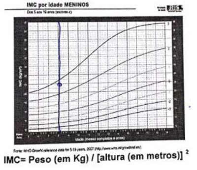
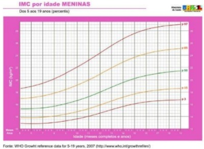
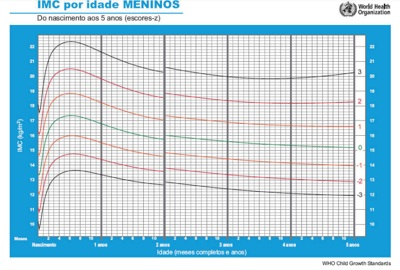
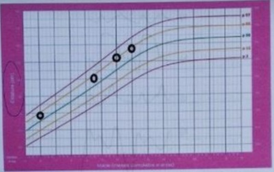
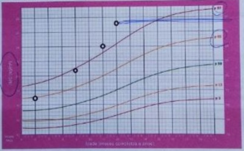
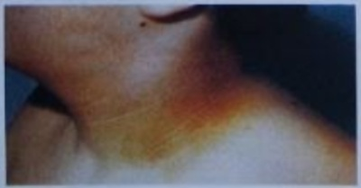
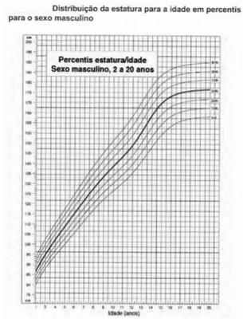
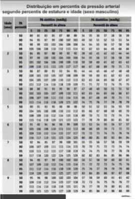

Questão 1 · Pediatria · Doenças Endocrinológicas · 4000182311Menino de 6 anos, asmático, é levado à consulta na pediatria geral, após quatro anos sem seguimento ambulatorial, sendo que as últimas medidas na caderneta registram peso, estatura e IMCkg/m² em escore-z de valor zero. A mãe relata que o paciente ganhou muito peso e cresceu pouco nesse período. Durante o atendimento, nota-se que o paciente apresenta asma não controlada, com diversas exacerbações, erros alimentares graves e sedentarismo. No momento, pesa 50kg (escore-z > +3) e tem 102cm de altura (escore-z entre -2 e -3), com IMC de 48kg/m2 (escore-z > +3). Nesse caso, a respeito da obesidade, é correto afirmar que:
A síndromes genéticas estão entre as principais causas
B baixa velocidade de crescimento dispensa investigação
C uso abusivo de corticoides por via oral em pacientes asmáticos pode justificar o quadro
D exames complementares são desnecessários para pesquisa de comorbidades associadas
Questão 2 · Pediatria · Diagnóstico Nutricional · 4000181746Menina de 3 anos e 6 meses de idade apresenta o índice de massa corpórea (IMC) para a idade de 19 kg/m² IMC por Idade MENINAS Do nascimento aos 5 anos (percentis) (WHO Child Growth Standards) De acordo com as informações fornecidas pelo gráfico, a indicação para manejo desse caso deve ser

A dieta e lipidograma.
B atividade física e ECG.
C dieta e atividade física.
D lipidograma e ECG.
Questão 3 · Obesidade · Pediatria · 4000181171Nas formas monogênicas de obesidade na infância, em um paciente com deficiência de leptina, encontra-se
A obesidade que irá se manifestar no final da adolescência e na vida adulta.
B hipogonadismo hipogonadotrófico.
C redução da densidade mineral óssea e atraso da idade óssea.
D alteração concomitante dos receptores das lipoproteínas.
E hipertireoidismo central e insuficiência adrenal.
Questão 4 · Obesidade Sindrômica · 4000171121Sobre síndromes relacionadas à obesidade, faça a correspondência adequada e assinale a opção com a sequência correta de cima para baixo. I. Síndrome de Cushing II. Síndrome metabólica III. Síndrome de Prader-Willi IV. Osteodistrofia hereditária de Albright ( ) hipotonia, hiperfagia, mãos e pés pequenos ( ) resistência insulínica, hipertensão, hipertrigliceridemia ( ) equimoses, osteoporose, distúrbio de crescimento ( ) calcificações subcutâneas, braquidactilia, resistência hormonal generalizada (PTH/TSH/LH/FSH)
A I, II, IV, III
B III, II, I, IV
C IV, III, I, II
D III, I, II, IV
E II, I, IV, III
Questão 5 · Gráf icos OMS Classif icação nutricional · 4000165394As variáveis utilizadas para cálculo do IMC (Índice Massa Corpórea) são:
A pregas cutâneas e peso adequado à idade
B peso, altura e pregas cutâneas
C pregas cutâneas e estatura
D peso e altura
Questão 6 · Comorbidades · Pediatria · 4000163676Criança de 8 anos de idade, masculino, com quadro clínico de obesidade com IMC acima de z-score +3, presença de acantose nigricans em região cervical, obesidade central com circunferência abdominal acima de P90 para idade e sexo, estrias claras em abdomen e membros inferiores, pressão sistólica acima de P90 para a idade, exames laboratoriais mostrando resistência à insulina e triglicerídeos acima de 110 mg/dL. Observando o quadro clínico descrito, qual a assertiva correta sobre os fatores associados à fisiopatologia da Síndrome Metabólica?
A Hipertensão arterial e dislipidemia correlacionam-se melhor com o próprio i
B O aumento da circunfere
C Os i
D A resiste
Questão 7 · Obesidade · Pediatria · Diagnóstico · 4000146657A Síndrome de Prader Willi afeta crianças desde o nascimento. Considerando as principais características da Síndrome de Prader Willi, é CORRETO afirmar:
A As crianças que sofrem dessa síndrome normalmente são anãs. Ela também afeta a capacidade mental e as glândulas sexuais, que produzem hormônios acima dos níveis normais.
B As crianças que sofrem dessa síndrome são obesas e têm pouco tônus muscular. Porém, ela não afeta a capacidade mental nem mesmo as glândulas sexuais, que produzem hormônios normalmente.
C As crianças que sofrem dessa síndrome têm aparência infantil desde o nascimento até o fim da vida. Ela também afeta a capacidade mental e as glândulas sexuais, que não produzem hormônios.
D As crianças que sofrem dessa síndrome são obesas e têm pouco tônus muscular. Ela também afeta a capacidade mental e as glândulas sexuais, que não produzem hormônios.
Questão 8 · Obesidade Sindrômica · Pediatria · 4000143046Sobre a síndrome de PraderWilli, analise os itens abaixo: I - Doença genética que provoca retardo mental, acidez, necessidade de comer constantemente, atraso no desenvolvimento motor, obesidade e defeitos no aparelho reprodutor; II - A alteração nos genes dos portadores deve-se à ausência de um segmento no cromossomo 15 herdado da mãe, o que compromete as funções do hipotálamo e desencadeia os sintomas da doença desde o seu nascimento. III - A descoberta precoce da doença permite uma intervenção rápida, que consiste na administração de hormônio do crescimento. Isso ajudará no desenvolvimento da criança e diminuirá a necessidade constante de se alimentar, evitando problemas com a obesidade. Está(ão) CORRETAS:
A Todos os itens
B Nenhum dos itens
C Apenas o Item II
D Apenas o item III
Questão 9 · Obesidade · Pediatria · 4000142800Em relação à obesidade infantil, marque a opção
A Não existe associação entre o aleitamento materno exclusivo por no mínimo 6 meses e a prevenção de obesidade infantil.
B Segundo a OMS, para classificação de obesidade infantil na faixa etária de 0 a 5 anos, usa-se como critério Z escore > 3,0.
C A suplementação ou a introdução de alimentos precocemente (em menores de 4 meses) não aumentou o risco de sobrepeso ou obesidade.
D A orientação nutricional é a única estratégia para o combate à obesidade infantil.
E Complicações da obesidade, como dislipidemia e hipertensão arterial, só acontecem em maiores de 15 anos de idade.
Questão 10 · Comorbidades · Obesidade · Pediatria · 4000139904Menina, 10 anos e 6 meses, com história de ganho de peso excessivo desde os 5 anos de idade. A mãe relata que o apetite é maior que o habitual, com consumo de alimentos, doces e sucos arti ciais entre as principais refeições, além da necessidade de repetir a porção de alimentos durante o almoço e jantar. A paciente pratica pouca atividade física e o tempo de lazer com jogos eletrônicos e assistindo televisão é de cerca de 4 a 5 horas diárias. Os pais e a família têm estatura mediana (estatura alvo de 163 cm), a mãe tem sobrepeso e diabetes mellitus tipo 2. Ao exame físico, a estatura é 147 cm (85ºP), o peso é 56 kg, o índice de massa corporal (25,9 kg/m2) encontra-se entre o +2 e +3DP, as frequências cardíaca e respiratória são normais e a pressão arterial é de 100/60 mmHg. Apresenta aumento do tecido adiposo com distribuição generalizada, placas escuras e com espessamento da pele nas regiões cervical e axilar e o desenvolvimento puberal, de acordo com os critérios de Tanner, é P3M3. Em relação aos dados apresentados, considere as seguintes afirmativas: 1. O diagnóstico provável é obesidade exógena e a lesão de pele, em geral, está associada à resistência insulínica. 2. Síndrome de Cushing deve ser incluída no diagnóstico diferencial, pois o excesso de peso está associado a alta estatura, achados clínicos presentes nesse diagnóstico. 3. O excesso de peso in uenciou o ritmo de maturação física, resultando no quadro de puberdade precoce que ela apresenta. 4. Os dados descritos permitem o diagnóstico de síndrome metabólica associada ao quadro de obesidade. Assinale a alternativa correta.
A Somente a afirmativa 1 é verdadeira.
B Somente as afirmativas 1 e 4 são verdadeiras.
C Somente as afirmativas 2 e 3 são verdadeiras.
D Somente as afirmativas 2, 3 e 4 são verdadeiras.
E As afirmativas 1, 2, 3 e 4 são verdadeiras.
Questão 11 · Obesidade · 4000133761Menina de 4 anos é levada à consulta ambulatorial de rotina. Responsável nega comorbidades e intercorrências no período interconsultas. Na anamnese dirigida, refere que a menina não gosta de verduras e legumes e, normalmente, ingere apenas frituras, lanches, biscoitos recheados e sucos arti ciais. Relata que ela não brinca com outras crianças e ca durante todo o dia no tablet, dorme pouco, pois só consegue dormir de madrugada e acorda quase na hora do almoço. À ectoscopia, apresenta panículo adiposo proeminente, sendo restante do exame físico normal. Pressão arterial tanto sistólica quanto diastólica no percentil 90; escore Z de IMC/idade > +2. A classificação nutricional da menina e conduta inicial adequada frente ao apresentado, respectivamente, são:
A sobrepeso / prescrever orlistat 120mg/dia VO e reavaliar em três meses .
B obesidade grau I / prescrever orlistat 120mg/dia VO e rastrear comorbidades associadas .
C sobrepeso / recomendar mudança de estilo de vida e alimentação e reavaliar em três meses.
D obesidade grau I / recomendar mudança de estilo de vida e alimentação e rastrear comorbidades associadas.
Revisar: possível letra faltando em enunciado
Questão 12 · Tratamento · 4000132367Escolar com nove anos de idade vem à consulta de rotina. Alimentação com excesso de carboidratos e gorduras saturadas. Também é sedentário. História familiar negativa para diabetes, doença cardiovascular precoce e dislipidemias. Na avaliação clínica, tem sobrepeso. Laboratório mostra colesterol total de 260 mg/dl, triglicerídeos 150 mg/dl. HDL 45 mg/dl. Qual a orientação adequada para esse quadro clínico e laboratorial?
A Dietoterapia, atividade física durante um ano e repetir o exame. Se não alterar, iniciar com estatinas.
B Dietoterapia, atividade física e iniciar imediatamente com estatinas.
C Repetir perfil lipídico antes de qualquer orientação.
D Dietoterapia, atividade física e repetir perfil lipídico a cada 3 meses.
Questão 13 · Obesidade · 4000131982Menina, de 11 anos de idade, consulta com queixa de ganho excessivo de peso há vários anos. Refere diminuição da resistência física a médios esforços. Faz uso de Fluticasona inalatória para tratamento de asma desde os 6 anos de idade. Pai com 168 cm (percentil 10) e 70kg (percentil 50), mãe com 159 cm (percentil 25) e 58 kg (percentil 10). Ao exame, paciente com estatura de 144 cm (percentil 50), peso de 50 kg (percentil), IMC de 28 (entre Z escore de 2 a 3), circunferência abdominal de 85 cm e circunferência de quadril de 80 cm, escurecimento da pele em região axilar e cervical, tecido mamário com 3 cm de diâmetro e sem pelos em região genital. Qual o melhor diagnóstico para o caso?
A Sobrepeso de causa exógena, distribuição central e sem comorbidade.
B Obesidade de causa endógena, central com comorbidade.
C Obesidade grave de causa endógena, central sem comorbidade.
D Obesidade de causa exógena, central e com comorbidade
Questão 14 · Obesidade Sindrômica · 4000129981Criança de 6 anos com história de baixo ganho de peso e sucção débil no primeiro ano de vida. A partir do terceiro ano com ganho de peso acentuado, fome excessiva. No momento peso no per- centil 95% e altura no percentil 25%. O diagnóstico mais provável para este paciente é:
A normalidade.
B hipotireoidismo.
C síndrome de Cushing.
D adenoma de hipófise.
E síndrome de Prader-Willi.
Questão 15 · Comorbidades · 4000129533Paciente, 10 anos, sexo feminino, é levada para consulta de rotina em ambulatório de pediatria. Mãe relata que a lha teve ganho ponderal considerável nos últimos 3 meses relacionada a mudança no padrão alimentar. Nega atividade física regular. História de diabetes e hipertensão arterial na família. Ao exame: Peso-50Kg (z-escore entre +2 e +3); E- 1,45m (z-escore+1); IMC-23,8 (z-escore entre +2 e +3); Circunferência abdominal - 80 cm (> percentil 90). Ausculta cardíaca e pulmonar normais. PA: 122x85mmHg. Pele e fâneros: presença de acantose nigrans em região de pescoço. Qual parâmetro do exame físico está mais relacionado ao risco cardiovascular na idade adulta?
A Circunferência abdominal.
B Índice de massa corpórea.
C Pressão arterial.
D Peso por idade.
Questão 16 · Pediatria · Diagnóstico · Gráf icos OMS Classif icação nutricional · 4000142339Menina, 7 anos de idade, foi levada para consulta em Unidade Básica de Saúde pela mãe. Apresenta queixa de ganho de peso excessivo nos últimos meses. Exame físico: Peso = 35 kg; Altura = 1,25 m (IMC = 22,4 Kg/m²). Colocado na curva (OMS) de IMC/Idade, identificado escore Z +2 e Z +3. Qual é o diagnóstico correto?
A Obesidade grave
B Obesidade
C Sobrepeso
D Risco de sobrepeso
Questão 17 · Prevalência · Obesidade · 4000127347Durante consulta de avaliação de rotina, uma criança de 5 anos apresentava história clínica e familiar preditiva para obesidade. Ao exame físico, apresentava IMC acima do percentil 97, aumento da circunferência abdominal com percentil acima de 90 para sua idade, medidas de dobras cutâneas com elevada porcentagem de gordura corporal e acantose nigricans em região cervical. Dentro do quadro clínico do paciente na infância, quais são os mais fortes preditores de síndrome metabólica na idade adulta?
A História clínica e familiar preditiva para obesidade.
B IMC acima do percentil 97 e acantose nigricans em região cervical.
C História clínica preditiva para obesidade e IMC acima do percentil 97
D Circunferência da cintura maior que o percentil 90 e as medidas de dobras cutâneas.
Questão 18 · Comorbidades · 4000119909Na doença hepática gordurosa não alcoólica,
A pode haver evolução para cirrose, mas não para o hepatocarcinoma.
B não é possível fazer o diagnóstico em crianças com menos de 5 anos.
C o diagnóstico é facilitado por ser habitualmente uma doença sintomática.
D a acantose nigricans é um marcador da hiperinsuilinemia.
E o padrão ouro para o diagnóstico é a ultrassonografia.
Questão 19 · Prevenção · 4000096544A prevalência da obesidade tem aumentado de forma acelerada nas crianças brasileiras. Ela pode comprometer de forma significativa a saúde, não só da criança, mas do adulto que ela será. Entre as medidas abaixo, a única que NÃO tem impacto positivo na prevenção da obesidade é:
A a leitamento materno
B atividade física regular
C uso de hipoglicemiante oral
D reduzir o uso de alimentos processados
E diminuir o tamanho das porções dos alimentos
Questão 20 · Tratamento · Quadro Clinico · 4000088904A respeito da obesidade na infância e na adolescência, é correto afirmar que:
A apenas a pressão sistólica aumenta significativamente com o incremento do índice de massa corporal
B a medida da circunferência abdominal não tem importância clínica na avaliação de crianças e adolescentes
C intervenções farmacológicas não são recomendadas para crianças com elevação isolada de triglicerídeos, a menos que seja muito acentuada
D a protrusão do abdômen leva a alterações em estruturas músculo-ligamentares favorecendo o aparecimento de deformidades como os joelhos varos e os pés planos
Questão 21 · Prevenção · 4000061932Segundo estudos publicados, o Brasil terá 11,3 milhões de crianças obesas até 2025. A obesidade infantil pode ser prevenida, exceto por:
A Aleitamento Materno sem desmame precoce
B Atividades físicas regulares
C Uso de aparelhos eletrônicos pela criança enquanto come
D Refeições em família com incentivo de hábitos saudáveis
Questão 22 · Quadro Clinico · 4000061327Em relação à obesidade exógena na criança, assinale a alternativa correta.
A É acompanhada, geralmente, por aumento da velocidade de crescimento e hipertensão arterial.
B É acompanhada por baixa estatura e hipogonadismo com atraso de idade óssea.
C Caracteriza-se por hipercolesterolemia e idade óssea avançada.
D Cursa, geralmente, com aumento da velocidade de crescimento e retardo puberal com hipercortisolismo.
E Cursa, geralmente, com aumento da velocidade de crescimento e idade óssea superior à cronológica.
Questão 23 · Prevalência · 4000059207Com relação aos dados epidemiológicos da obesidade infantil no Brasil, assinale a alternativa correta:
A A obesidade tem como característica demográfica atingir as classes econômicas mais pobres e ser mais prevalente nos estados das regiões Norte e Nordeste
B A principal causa de obesidade na faixa etária pediátrica é o hipotireoidismo
C Atualmente, 1 em cada 3 crianças de 5 a 9 anos está com excesso de peso (sobrepeso e obesidade
D Estima-se que, em 10 anos, 2/3 da população abaixo de 5 anos de idade será obesa
E Trata-se de um problema de saúde pública, e estima-se que, em 20 anos, ultrapassará a desnutrição como o principal problema alimentar no Brasil
Questão 24 · Obesidade · 4000040375Em relação a obesidade infantil, assinale a alternativa INCORRETA:
A Está associada ao desenvolvimento, na idade adulta, de hipertensão arterial, doença cardíaca, osteoartrite, DM2 e alguns tipos de câncer;
B A obesidade está mais relacionada ao padrão alimentar e à atividade física da criança do que aos fatores genéticos;
C O uso de medicação no tratamento da obesidade em adolescentes se faz essencial para o sucesso do tratamento;
D Orientação alimentar, envolvimento familiar no tratamento e apoio psicossocial são pontos importantes para o tratamento da obesidade infantil.
Questão 25 · Dislipidemia · 4000031455Em 2012, a American Heart Association, com base nas recomendações do Committee on Atherosclerosis, Hypertension and Obesity in the Young (AHOY), sugeriu um algoritimo para tratamento das dislipidemias de acordo com o risco individual e per l lipídico obtido. Dessa forma, todas as crianças com LDL-C > 130mg/dL devem ser acompanhadas. São critérios para indicação de tratamento farmacológico em crianças acima de 10 anos, EXCETO:
A LDC> 160mg/dL, se houver história familiar de aterosclerose prematura ou dois ou mais fatores de risco (HDL-C <35 mg/dL, tabagismo, HAS, obesidade e diabetes.
B LDC-C>190 mg/dL.
C LDL-C> 100mg/dL e obesidade em um dos genitores.
D LDL-C> 130mg/dL, se houver manifestação de aterosclerose.
Questão 26 · Comorbidades · 4000030299Em uma adolescente com obesidade e resistência à insulina, um sinal clínico importante é:
A Acne inflamatória
B Acantosis nigricans
C Exacerbação de dermatite seborreica
D Associação com vitiligo
E Esclerodermia
Questão 27 · Obesidade · Causas · 4000027412Uma das características clínicas para diferenciarmos uma obesidade exógena da obesidade por hipercortisolismo é:
A velocidade de crescimento normal nas 2 situações
B velocidade de crescimento baixa nas 2 situações
C velocidade de crescimento baixa na obesidade exógena e alta no hipercortisolismo
D velocidade de crescimento normal ou discretamente elevada na obesidade exógena e baixa na obesidade por hipercortisolismo
E velocidade de crescimento alta nas 2 situações
Questão 28 · Comorbidades · 4000023918Um paciente de 5 anos de idade comparece em consulta de puericultura acompanhado pelos pais. Após ser calculado o índice de massa corporal (IMC) do paciente, observa-se que ele se encontra acima do escore Z + 3. A respeito desse caso clínico e com base nos conhecimentos médicos correlatos, julgue o item a seguir. Não se pode observar manifestações de arteriosclerose na faixa etária pediátrica, em associação com o diagnóstico desse paciente.
A Certo.
B Errado.
Questão 29 · Comorbidades · 4000023908Um paciente de 5 anos de idade comparece em consulta de puericultura acompanhado pelos pais. Após ser calculado o índice de massa corporal (IMC) do paciente, observa-se que ele se encontra acima do escore Z + 3. A respeito desse caso clínico e com base nos conhecimentos médicos correlatos, julgue o item a seguir. Caso esse diagnóstico mantenha-se durante o envelhecimento, esse paciente encontra-se mais suscetível ao desenvolvimento de neoplasias como cólon, próstata e fígado.
A Certo.
B Errado.
Questão 30 · Comorbidades · 4000023903Um paciente de 5 anos de idade comparece em consulta de puericultura acompanhado pelos pais. Após ser calculado o índice de massa corporal (IMC) do paciente, observa-se que ele se encontra acima do escore Z + 3. A respeito desse caso clínico e com base nos conhecimentos médicos correlatos, julgue o item a seguir. A hipertensão arterial sistêmica é uma das complicações cardiovasculares que podem estar associadas.
A Certo.
B Errado.
Questão 31 · Tratamento · 4000023897Um paciente de 5 anos de idade comparece em consulta de puericultura acompanhado pelos pais. Após ser calculado o índice de massa corporal (IMC) do paciente, observa-se que ele se encontra acima do escore Z + 3. A respeito desse caso clínico e com base nos conhecimentos médicos correlatos, julgue o item a seguir. Na presença de comorbidades relacionadas à obesidade, deve-se objetivar a redução gradual do peso da criança.
A Certo.
B Errado.
Questão 32 · Diagnóstico Nutricional · 4000023892Um paciente de 5 anos de idade comparece em consulta de puericultura acompanhado pelos pais. Após ser calculado o índice de massa corporal (IMC) do paciente, observa-se que ele se encontra acima do escore Z + 3. A respeito desse caso clínico e com base nos conhecimentos médicos correlatos, julgue o item a seguir. O diagnóstico é de obesidade grave.
A Certo.
B Errado.
Questão 33 · Comorbidades · Obesidade · Pediatria · 4000128195Escolar de 8 anos, gênero masculino, comparece ao centro de saúde acompanhado por sua mãe que se mostra preocupada com o peso da criança. À avaliação clínica foram encontrados peso de 34 Kg e estatura de 125 cm. A criança tem uma alimentação rica em guloseimas e gorduras. Realiza atividades físicas na escola 2 vezes na semana. Em casa, gosta de car assistindo televisão e jogando jogos no computador por aproximadamente 3 horas por dia. Ao exame, apresenta hepatomegalia (fígado a 3cm RCD) não dolorosa e aumento do panículo adiposo, sem outros achados significativos. Diante do quadro exposto acima e utilizando o gráfico e a equação abaixo, a conduta INCORRETA para o caso é:

A Considerar o diagnóstico de sobrepeso para este paciente e solicitar exames laboratoriais: glicemia de jejum e perfil lipídico
B Indicar ultrassonografia abdominal para avaliar a hepatomegalia que pode estar relacionada ao acúmulo de gordura no fígado
C Orientar melhores hábitos alimentares e atividade física adequada à dade para contribuir para perda de peso
D Realizar acompanhamento ambulatorial da pressão arterial do paciente já que hipertensão arterial pode ocorrer nessa situação
Questão 34 · Doenças Endocrinológicas · 4000127492Paciente adolescente do sexo feminino, 14 anos, com história de grande aumento de peso nos últimos meses. Ao exame apresenta tecido adiposo com uma distribuição centrípeta, estrias violáceas e hipertensão arterial. Assinale a desordem mais provável relacionada a este ganho ponderal: A causa mais provável deste ganho de peso é:
A Hipotireoidismo
B Doença renal crônica
C Obesidade exógena
D Síndrome de Cushing
Questão 35 · Comorbidades · 4000116083Dentre as comorbidades em uma adolescente de 17 anos com IMC acima do percentil 95, a que pode ser considerada como de ocorrência mais imediata é:
A Menstruação irregular
B Baixa autoestima
C Esteatose não alcoólica
D Dor articular
E Hirsutismo
Questão 36 · Etiologia · Causas · 4000112044A principal causa de obesidade infantil é o consumo crônico e excessivo de alimentos, acima do consumo calórico, causado por baixo nível de atividade física. Entretanto, há doenças endocrinológicas que podem estar associadas a esse quadro. Escolha nas alternativas abaixo quais são elas:
A Insulinopenia e Insulinoma.
B Síndrome de Cushing e hipotireoidismo.
C D. de Prader-Willi e Bardet-Bield.
D Depressão e ansiedade.
Questão 37 · Prevenção · 4000108307São alvos potenciais para a prevenção da obesidade na infância e na adolescência, EXCETO:
A Evitar e limitar o consumo de refrigerantes.
B Evitar o hábito de comer assistindo TV.
C Aumentar a exposição à propaganda de alimentos.
D Estabelecer e respeitar o horário das refeiçôes.
Questão 38 · Comorbidades · 4000108105Recomenda-se pesquisar o per l lipídico (colesterol, HDL, triglicerídeos e LDL) de crianças cujos pais ou avós apresentam doença cardiovascular precoce. O rastreamento deve ser realizado a partir dos:
A 6 meses de idade.
B 12 meses de idade.
C 2 anos de idade.
D 5 anos de idade.
Questão 39 · Comorbidades · Causas · Diagnóstico · 4000105750M.F.S., 10 anos, vem ao pediatra acompanhada de seus pais devido a ganho de peso excessivo. Nos últimos seis meses apresentou ganho de peso de 5 kg e cresceu 4 cm. Mãe refere aumento dos pelos no corpo. Refere ter muito sono, principalmente após a escola, quando precisa tirar um cochilo, mas gosta de dormir tarde vendo séries no celular. Está em uso de budesonida spray nasal 32 mcg 12/12 horas e beclometasona spray oral 100 mcg 12/12 há três meses para tratamento de rinite e asma. Refere fazer atividade física na escola ocasionalmente e nas aulas de educação física, uma vez por semana. Ao exame físico apresenta estatura de 143 cm (percentil 75), 50 kg (percentil 95), IMC de 24 (acima do percentil 95), M2 P3 e escurecimento da pele na região do pescoço. A hipótese diagnóstica mais provável é:
A Hiperinsulinismo primário.
B Hipotireoidismo.
C Obesidade exógena.
D Síndrome de Cushing.
E Síndrome do ovário policístico.
Questão 40 · Tratamento · Diagnóstico · 4000101317Escolar, seis anos e nove meses, sexo feminino, é levada à consulta anual de puericultura. Exame físico: peso: 28.800g; altura: 120 cm, sem alterações no restante do exame. Diante do exposto e utilizando o gráfico abaixo, deve-se comunicar ao responsável:

A O diagnóstico de sobrepeso, solicitando rigor no controle no âmbito alimentar.
B A probabilidade de obesidade, realizando medições adicionais de adiposidade.
C A probabilidade de sobrepeso, instituindo avaliações de parâmetros bioquímicos.
D O diagnóstico de obesidade, orientando medidas para a prevenção de comorbidades.
Questão 41 · Obesidade · Pediatria · 4000083133Durante as últimas décadas, o aumento da prevalência de excesso de peso infanto- juvenil se tornou uma importante preocupação em saúde pública. Sobre esse problema na infância, é correto afirmar que:
A a ingestão excessiva de proteínas no primeiro ano de vida, interrupção precoce do aleitamento materno e problemas familiares são fatores que têm associação comprovada com obesidade de causa exógena
B as dietas restritivas e a prática de exercícios físicos vigorosos estão indicadas para crianças que já apresentem complicações cardiopulmonares, metabólicas, ortopédicas e/ou psicológicas
C o tratamento medicamentoso do excesso de peso é contraindicado na infância e na adolescência, com exceção de alguns antidepressivos que podem ser usados em casos específicos
D a obesidade presente na infância leva ao aumento do desenvolvimento das doenças crônicas não transmissíveis, somente se a pessoa continuar obesa na vida adulta
Questão 42 · Diagnóstico · 4000077395A definição de obesidade e sobrepeso utiliza como parâmetro o índice de massa corporal (IMC). O cálculo do IMC é feito considerando o peso:
A ao quadrado dividido pelo dobro da altura
B dividido pela altura ao quadrado
C ao quadrado dividido pela altura
D dividido pelo dobro da altura
Questão 43 · Dislipidemia · 4000074000Constitui(em) contraindicação para o tratamento medicamentoso com estatinas para dislipidemia na faixa etária pediátrica:
A Idade inferior a 16 anos.
B Hipertireoidismo e diabetes mellitus.
C Uso de anticoncepcionais orais.
D Doença hepática, insuficiência renal, miopatia e gravidez.
E Estágio puberal de Tanner igual ou maior que IV.
Questão 44 · Avaliação Laboratorial · Tratamento · Quadro Clinico · 4000060488Em relação à obesidade infantil, atribua V (Verdadeiro) ou F (Falso) às afirmativas a seguir. ( ) O tratamento focado nas mudanças de comportamento no contexto do ambiente familiar tem sido associado a perdas de peso duradouras e reduções do índice de massa corpórea. ( ) Exames de triagem devem ser realizados independentemente da idade, uma vez que é importante a pesquisa da etiologia. ( ) A obesidade é uma doença de etiologia multifatorial e resulta da associação entre fatores genéticos, ambientais e comportamentais. ( ) Assim como no indivíduo adulto, a determinação do peso calórico determina o diagnóstico de obesidade. ( ) Três importantes componentes do sistema aferente que regulam o apetite e a saciedade são a leptina, a adiponectina e os hormônios intestinais. Assinale a alternativa que contém, de cima para baixo, a sequência CORRETA.
A V, V, F, V, F.
B V, F, V, F, V.
C V, F, F, V, V.
D F, V, F, F, V.
E F, F, V, V, F.
Questão 45 · Causas · 4000040643A obesidade infantil representa um desa o para saúde brasileira e, atualmente, 8% das crianças com idade entre 0 e 5 anos são obesas. Portanto, a puericultura do século XXI está voltada para prevenção de doenças crônicas resultantes do excesso de peso. Assinale a alternativa correta quanto à principal causa do aumento da prevalência de obesidade na infância.
A Aleitamento materno.
B Ausência de uma política de saúde voltada para educação nutricional e estímulo a práticas esportivas.
C Estimulação de alimentos tipo "fast food", uma vez que as restrições desses alimentos podem levar à depressão infantil.
D Como a obesidade exógena tem causa genética, se um dos genitores for obeso, a criança tem 80% de ser também.
E A alta prevalência da obesidade infantil tem como causa secundária distúrbios hormonais e síndromes genéticas.
Questão 46 · Diagnóstico Nutricional · 4000033910Criança quatro anos e dois meses é avaliada em consulta de rotina. Durante investigação dos hábitos de vida, pais referem que criança é muito seletiva para se alimentar, ingere grande quantidade de sucos e excesso de alimentos industrializados, porém, preferencialmente integrais. Não realiza atividades físicas rotineiramente e permanece várias horas por dia utilizando aparelhos eletrônicos (celulares, tablets, televisores). Durante a avaliação foi identi cada que o índice de massa corpórea é de 18,5. De acordo com o gráfico abaixo e as orientações da Sociedade Brasileira de Pediatria, a hipótese diagnóstica e conduta adequada neste caso é:

A Trata-se de paciente com obesidade, deve-se, durante a anamnese e exame físico realizar investigação de sinais de possíveis complicações como, por exemplo, hipertensão arterial sistêmica.
B Embora o paciente não esteja classificado como obeso é imprescindível orientação quanto a hábitos alimentares saudáveis, realização de atividades físicas e controle do tempo de uso de eletrônicos.
C Embora o paciente não esteja classificado como obeso deve-se orientar dieta restritiva, objetivando perda de peso, para obtenção de IMC adequado.
D Trata-se de paciente com obesidade e o tempo de aleitamento materno não é um fator protetor a ser considerado no caso.
Questão 47 · Causas · 4000021167São considerados fatores de risco para o desenvolvimento de obesidade na infância, exceto:
A Obesidade materna
B Desmame precoce
C Introdução inadequada da alimentação complementar
D Uso de leite de vaca antes de 1 ano de idade
E Sexo feminino
Questão 48 · Tratamento · 4000017474A obesidade é doença crônica, complexa, de etiologia multifatorial e resulta de balanço energético positivo que está comprometendo a saúde infantil. Analise as proposições em relação ao tratamento da obesidade na infância e assinale (V) para verdadeira e (F) para falsa. ( ) Prevenir a obesidade na infância é a maneira mais segura de controlar essa doença crônica, que pode se iniciar já na vida intra-uterina. ( ) Limitar o tempo de laser passivo a no máximo quatro horas por dia, controlando os horários de televisão e computador e videogame. ( ) Estimular o aleitamento materno exclusivo até o sexto mês de vida e o aleitamento materno total de preferência até os dois anos de idade. ( ) Alimentos diet e light podem ser usados rotineiramente com o objetivo de redução calórica. ( ) Deve-se estimular o consumo de mais de cinco porções de frutas e hortaliças para adolescentes. Assinale a alternativa que contém a sequência correta, de cima para baixo:
A F – V – V – F – V
B V – F – V – V – F
C F – V – V – V – F
D V – F – V – F – V
Questão 49 · Obesidade · Pediatria · Tratamento · 4000130246obesidade infantil pode ser considerada uma doença crônica cuja origem é exógena em 98% dos pacientes. Sobre a condução da obesidade nessa faixa etária a partir da atenção primária, é CORRETO afirmar que:
A A manutenção do peso da criança é um sinal de fracasso das abordagens de controle.
B O uso de alimentos diet e adoçantes configuram uma estratégia adequada.
C Ações comunitárias para o enfrentamento de determinantes sociais, podem diminuir aincidência.
D A abordagem medicamentosa faz parte do projeto terapêutico.
Questão 50 · Avaliação Laboratorial · 4000112299Na obesidade infantil um elenco mínimo de exames laboratoriais deve ser solicitado. Quais são estes exames iniciais na avaliação da criança e do adolescente obeso?
A Perfil lipídico e glicêmico e hormônios sexuais
B Colesterol sérico, hemograma, T3 e T4
C Colesterol sérico, enzimas hepáticas e glicemia de jejum
D Glicemia de jejum e hemoglobina glicosilada
E Hemograma e hormônios sexuais
Questão 51 · Diagnóstico · 4000109700De acordo com a Organização Mundial de Saúde e o Ministério da Saúde, o diagnóstico de sobrepeso em uma criança de 7 anos pode ser feito se o escore z de
A peso estiver entre 0 e +1.
B peso estiver entre +1 e +2.
C índice de massa corpórea estiver entre 0 e +1.
D índice de massa corpórea estiver entre +1 e +2.
E índice de massa corpórea estiver entre +2 e +3.
Questão 52 · Comorbidades · 4000105661Uma adolescente de 12 anos de idade apresenta queixa de ganho excessivo de peso há alguns anos, sem causa aparente, segundo os pais. É lha única, seus pais são obesos e o pai com 39 anos é diabético hipertenso. O avô paterno faleceu por complicações de diabete aos 65 anos de idade. Ao exame físico encontra-se em bom estado geral, os dados antropométricos estão demonstrados nas guras abaixo, bem como as lesões cutâneas observadas. Sua pressão arterial está no percentil 90 e seu estágio puberal (Tanner) é M3P4. Não são observadas outras anormalidades ao exame físico. Os exames laboratoriais iniciais são: Glicemia de Jejum: 97 mg/dl; Hemoglobina glicada (%) (HBA1c): 6,4%; Colesterol Total: 225 mg/dl; Colesterol HDL: 33 mg/dL; Triglicérides: 298 mg/dl. De acordo com os dados clínicos e laboratoriais, qual conduta tomar?



A Orientar dieta hipocalórica, hipogordurosa e aumento da atividade física e iniciar metformina
B Orientar dieta hipocalórica, hipogordurosa e aumento da atividade física
C Solicitar teste de tolerância oral à glicose para dosar glicemia e insulina
D Orientar dieta hipocalórica, hipogordurosa e aumento da atividade física e iniciar hipolipemiante oral
Questão 53 · Avaliação Laboratorial · 4000103763Menina de 7 anos de idade está em consulta ambulatorial de rotina. Não há queixas ativas durante a consulta. No exame clínico observa-se índice de massa corpórea acima do percentil 97 para seu sexo e idade, de acordo com as curvas da OMS. Sem outras alterações ao exame. Além da glicemia de jejum, colesterol total e frações e triglicérides, qual exame laboratorial está indicado de acordo com as recomendações da Sociedade Brasileira de Pediatria?
A Alanina aminotransferase.
B Insulina de jejum.
C Teste de tolerância oral à glicose.
D Hormônio tireoestimulante.
Questão 54 · Comorbidades · Quadro Clinico · 4000085114O (A)________é a medida mais indicada para definir obesidade em crianças e adolescentes. Quando nesses pacientes obesos também encontramos________, aumenta muito o risco cardiovascular. A alteração hepática mais frequente nesses pacientes é_________.
A Índice de massa corporal - síndrome metabólica - esteatose.
B Circunferência abdominal - hiperinsulinismo - fibrose hepática.
C Índice de massa corporal - hiperinsulinismo - hemocromatose.
D Índice de massa corporal - hiperinsulinismo - fibrose hepática.
E Circunferência abdominal - síndrome metabólica - esteatose.
Questão 55 · Comorbidades · 4000066612A obesidade infantil é problema de saúde pública emergente em todo o mundo. Algumas complicações ocorrem na infância relacionadas ao importante excesso de peso, exceto:
A hipertensão arterial
B acantose nigricans
C pseudotumor cerebral
D esofagite eosinofílica
Questão 56 · Pediatria · Síndrome Metabólica · 4000059411Pelo departamento de nutrologia da Sociedade Brasileira de Pediatria são considerados critérios diagnósticos de síndrome metabólica em pacientes de 10 a 16 anos, exceto: (PROPED ciclo 3 vol. 1 pág.: 110)
A Circunferência abdominal elevada.
B Hipertensão arterial sistêmica (PAS = 130 ou PAD = 85 mmHg).
C Hipertrigliceridemia (= 150 mg/dL).
D HDL-C alta ( > 40 mg/dL).
E Glicemia de jejum elevada (> 100 mg/dL)
Questão 57 · Causas · 4000057172A obesidade infantil é uma preocupação da saúde pública. A esse respeito, é INCORRETO afirmar:
A As metanálises têm apontado para efeito protetor do aleitamento materno sobre a obesidade e sobrepeso na idade adulta.
B A mudança dos valores familiares com relação à mudança de hábito é de extrema importância.
C A obesidade de causa endócrina não é a mais frequente.
D Os hábitos familiares não interferem no aumento do peso da criança, isto ocorre apenas no ambiente escolar.
E Os baixos teores de proteína e calorias do leite materno quando comparados às fórmulas, podem estar envolvidos na diminuição do sobrepeso na idade adulta das crianças amamentadas.
Questão 58 · Obesidade · Tratamento · 4000024393Criança de 4 anos é levada para consulta, pois sua mãe está preocupada com seu ganho excessivo de peso. A mãe nega doenças pregressas do lho e informa que ele come de tudo, de forma excessiva, e é sedentário. Amamentação ao seio materno até 6 meses. Peso: 30kg (acima z score +3), Altura 1,12m (z score +2), IMC: 23,9 (acima do z score +3). Qual é o diagnóstico nutricional e a melhor conduta?
A Obesidade. Melhorar qualidade da alimentação em relação ao seu equilíbrio de macro e micronutrientes, com restrição calórica.
B Sobrepeso. Melhorar qualidade da alimentação em relação ao seu equilíbrio de macro e micronutrientes, sem restringir calorias.
C Sobrepeso. Não mudar dieta habitual e iniciar atividade física de 30 minutos, 3 vezes por semana.
D Obesidade. Iniciar inibidores da receptação de serotonina, associado a dieta restritiva e atividade física.
Questão 59 · Comorbidades · 4000023981Paciente de 12 anos, do sexo masculino, trazido ao ambulatório pelos pais para consulta de rotina. Sem queixas, desenvolvimento neuropsicomotor adequado, cartão vacinal em dia com as recomendações da Sociedade Brasileira de Pediatria. Ao exame físico: peso = 50 kg; estatura = 145 cm; Índice de Massa Corporal (IMC) = 23.78 kg/mg²; pressão arterial = 118 x 75 mmHg. Com base nos dados colhidos na anamnese, no exame físico e nos exames complementares do paciente, o médico optou por solicitar ultrassonogra a de abdome total para o adolescente. A justi cativa para esse exame é maior probabilidade de:




A Nefrolitíase
B Colelitíase
C Esteatose hepática.
D Pancreatite assintomática.
Questão 60 · Obesidade · 4000019361Pela OMS, obesidade é definida como “doença na qual existe uma acumulação excessiva de massa gorda, de tal forma que a saúde pode ser adversamente afetada”. A Pesquisa Nacional de Saúde do Escolar (PeNSE 2015) mostrou que 25,1% dos adolescentes de 13 a 15 anos e 21,4% de 16 a 17 anos apresentam excesso de peso. Sobre essa doença podemos a rmar, exceto:
A Excesso de ganho de peso na gestação e diabetes implicam em maior peso no nascimento, rápido ganho de peso pós-natal e maior adiposidade com risco de obesidade na infância e adolescência (PROGRAMAÇÃO FETAL);
B Crianças que apresentam restrição de crescimento intra-uterino, que nascem pequenas para a idade gestacional e apresentam rápido ganho de peso pós-natal, tem maior risco de desenvolver obesidade e síndrome metabólica (TEORIA DO FENOTIPO POUPADOR);
C O excesso de peso na infância e adolescência é considerado uma variável preditora de sobrepeso no adulto;
D Aleitamento materno exclusivo ate 4 meses diminui o risco de obesidade em até 50%, e essa proteção é dose dependente, ou seja, quanto maior o tempo de aleitamento, menor o risco.
Questão 61 · Obesidade · 4000019006De acordo com as curvas de crescimento da Organização Mundial de Saúde, uma criança do sexo masculino, com 6 anos e 5 meses de idade, com índice de massa corpórea (IMC) entre o escore Z + 1 e + 2 é classificada como:
A Risco de sobrepeso.
B Eutrofia.
C Sobrepeso.
D Obesa.
E Magreza.
Questão 62 · Avaliação Laboratorial · 4000018376"A obesidade é uma doença crônica, complexa, de etiologia multifatorial e resulta de balanço energético positivo. O seu desenvolvimento ocorre, na maioria dos casos, pela associação de fatores genéticos, ambientais e comportamentais". "Os exames subsidiários podem ser utilizados para obtenção de dados mais precisos sobre a composição corporal, para investigação de possíveis causas da obesidade e para diagnóstico das repercussões metabólicas mais comuns da obesidade" (Obesidade na infância e adolescência - Manual de Orientação / Sociedade Brasileira de Pediatria). Assinale a alternativa correta com relação aos exames subsidiários sugeridos na avaliação inicial de crianças e adolescentes obesos, sem comorbidades:
A Glicemia de jejum, perfil sérico lipídico (colesterol total, HDL, LDL e triglicerídeos) e aminotransferases.
B Glicemia de jejum, insulinemia, perfil sérico lipídico (colesterol total, HDL, LDL e triglicerídeos) e aminotransferases.
C Glicemia de jejum, perfil sérico lipídico (colesterol total, HDL, LDL e triglicerídeos), aminotransferases, fosfatase alcalina e gama-GT.
D Glicemia de jejum, insulinemia, perfil sérico lipídico (colesterol total, HDL, LDL e triglicerídeos).
Questão 63 · Tratamento · 4000017885R.G.R., uma criança de 7 meses de idade, foi levada pelos pais a um pronto atendimento infantil com quadro de tosse e secreção nasal há cerca de 10 dias, com o desenvolvimento de febre, nos últimos 2 dias, e respiração rápida. Ao exame físico, foram observados uma orofaringe com hiperemia discreta, linfonodos cervicais normais, otoscopia normal bilateral, ausculta pulmonar com estertores crepitantes à esquerda, palpação abdominal normal, ausência de sinais de irritação meníngea e inexistência de alterações dermatológicas. A frequência respiratória foi de 52 incursões por minuto. Não havia presença de tiragem subcostal, nem de insu ciência ventilatória, nem de cianose. A paciente consegue alimentar-se ao seio materno com pouca di culdade. A saturação periférica de oxigênio é de 96%. A radiogra a de tórax demonstra área de consolidação em lobo inferior esquerdo e derrame pleural de cerca de 1,5 cm. R.G.R., após a resolução de seu quadro de saúde, foi levada por seus pais para um atendimento rotineiro de puericultura, agora com 9 meses de idade, com o médico de família e comunidade do posto de saúde próximo à casa deles. Os pais estão realizando, na criança, a introdução alimentar de forma adequada, associada a 600 mL de fórmula láctea apropriada para a idade. A criança não está em uso de qualquer medicação ou suplemento. A respeito do caso clínico apresentado e de conhecimentos médicos correlatos, julgue o item a seguir. A partir dos 2 anos de idade, caso haja presença de comorbidades associadas à obesidade, deve - se estimular uma redução lenta e gradural do peso até a sua normalização.
A Certo.
B Errado.
Questão 64 · Comorbidades · 4000017867R.G.R., uma criança de 7 meses de idade, foi levada pelos pais a um pronto atendimento infantil com quadro de tosse e secreção nasal há cerca de 10 dias, com o desenvolvimento de febre, nos últimos 2 dias, e respiração rápida. Ao exame físico, foram observados uma orofaringe com hiperemia discreta, linfonodos cervicais normais, otoscopia normal bilateral, ausculta pulmonar com estertores crepitantes à esquerda, palpação abdominal normal, ausência de sinais de irritação meníngea e inexistência de alterações dermatológicas. A frequência respiratória foi de 52 incursões por minuto. Não havia presença de tiragem subcostal, nem de insu ciência ventilatória, nem de cianose. A paciente consegue alimentar - se ao seio materno com pouca di culdade. A saturação periférica de oxigênio é de 96%. A radiogra a de tórax demonstra área de consolidação em lobo inferior esquerdo e derrame pleural de cerca de 1,5 cm. R.G.R., após a resolução de seu quadro de saúde, foi levada por seus pais para um atendimento rotineiro de puericultura, agora com 9 meses de idade, com o médico de família e comunidade do posto de saúde próximo à casa deles. Os pais estão realizando, na criança, a introdução alimentar de forma adequada, associada a 600 mL de fórmula láctea apropriada para a idade. A criança não está em uso de qualquer medicação ou suplemento. A respeito do caso clínico apresentado e de conhecimentos médicos correlatos, julgue o item a seguir. O sobrepeso e a obesidade em crianças e adolescentes podem se relacionar com outras comorbidades, como síndrome metabólica, dislipidemia, diabetes e hipertensão arterial sistêmica.
A Certo.
B Errado.
Questão 65 · Prevenção · 4000014513A respeito do crescimento e do desenvolvimento infantil e de seus impactos na saúde da criança, julgue o item a seguir. Padrões de comportamento alimentar devem ser implantados a partir dos seis meses de idade, priorizando-se hábitos alimentares saudáveis, o que poderá determinar a prevenção de doenças relacionadas à má alimentação, como sobrepeso, obesidade e diabetes.
A Certo.
B Errado.
Questão 66 · Comorbidades · 4000014311Adolescente, 14 anos, procura unidade básica de saúde com queixa de excesso de peso. É sedentário e possui Índice de massa corpórea (IMC) acima de P97 para idade, aumento de gordura localizada em abdome com estrias, hiperpigmentação grosseira nas dobras cutâneas de região cervical e axilas e PA acima do percentil 95. Qual dado do caso clínico é característico da resistência à insulina?
A Hipertensão arterial sistêmica.
B Presença de Acantosis nigricans.
C Aumento de gordura abdominal.
D Características cushingoides.
E Hábito de vida sedentário.
Questão 67 · Diagnóstico · 4000005811A Organização Mundial de Saúde define obesidade como excesso de gordura corporal que apresenta riscos à saúde. Assinale a alternativa correta. Respostas: 1 12 23 34 45 56 67
A A medida da circunferência abdominal deve ser realizada na altura da cicatriz umbilical.
B A medida das pregas cutâneas não é recomendada para estimativa de adiposidade.
C A circunferência abdominal avalia indiretamente a gordura visceral e não tem relação com comorbidades.
D Crianças maiores de 2 anos com incremento da curva do IMC (índice de massa corporal) não são consideradas de risco para obesidade.
E A relação circunferência abdominal/estatura "maior que" 0,5 é utilizada para avaliação de risco para desenvolvimento de Diabetes tipo 2, dislipidemia e síndrome metabólica.